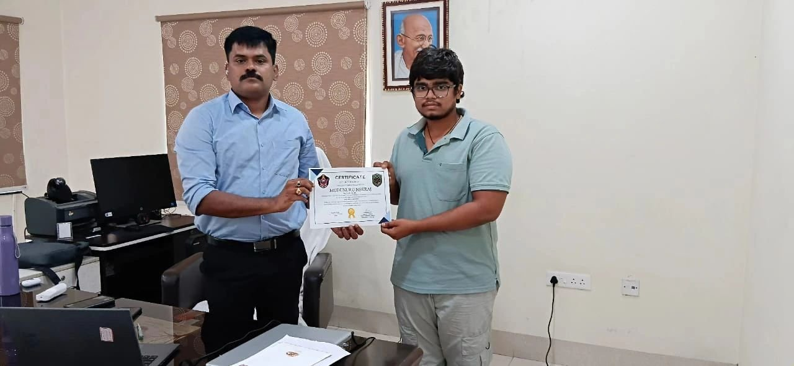

I'm a final-year B.Tech Cyber Security student at Vignan's Institute of Information Technology, Visakhapatnam, graduating in 2027. My work sits at the intersection of digital forensics, incident response, and applied AI security, from analyzing CDR/IPDR records on live cybercrime cases to building machine-learning intrusion detection systems.
Across six internships, I've investigated real cybercrime cases with the AP Police Cyber Crime Department, engineered client-facing security tooling for a US-based firm on night shifts, and worked on GenAI and RAG systems in applied AI research. I currently consult at SIRI Law LLP, bridging cybersecurity findings with legal frameworks like the IT Act and DPDP Act 2023.
I'm working toward a career in digital forensics, DFIR analysis, and cybercrime investigation, ideally with government agencies, intelligence organizations, or specialized security research teams.
Hands-on capability across security operations, forensics, offensive security, and applied AI tooling.
Six internships spanning cybercrime investigation, SOC-adjacent client work, and applied AI research.

Security tools I've designed and shipped publicly on GitHub, from DAST automation to AI-based intrusion detection.
Enterprise DAST automation platform for Apache Tomcat, CLI-first and CI-native, powered by OWASP ZAP. Engineered to target 15+ Apache Tomcat CVEs, integrating security gates into GitHub Actions and Azure DevOps pipelines to enforce vulnerability checks on every deployment, eliminating manual pre-production security testing.
Secret detection tool that goes beyond flagging leaked credentials: it verifies whether leaked keys are still active and enumerates real permissions (AWS IAM, GitHub scopes). Detects 17+ credential types across codebases and Git history using regex + Shannon entropy analysis, with risk scoring and SARIF integration for GitHub Security.
AI-powered Network Intrusion Detection System trained on the CICIDS2017 dataset using Random Forest and Logistic Regression classifiers, achieving 95%+ accuracy across DoS, Probe, R2L, and U2R attack categories. Cross-validated against a completely separate CICIDS2018 dataset to prove real-world generalization, a step most portfolio IDS projects skip.
An end-to-end GenAI pipeline that semantically parses and ranks resumes against job requirements using LLMs, automating candidate evaluation with structured scoring and justification. Generates ranked shortlists with criteria-level reasoning, eliminating inconsistencies in manual resume review.
A production-grade Retrieval-Augmented Generation system with LangGraph workflow orchestration, grounding all AI responses in a domain-specific knowledge base to drastically reduce hallucinations. Embeds a Human-in-the-Loop escalation path: when retrieval confidence drops below 35% or a user requests a human agent, the query routes to a live escalation ticket instead of guessing.
Verified training and certification credentials in networking, SOC/AI tooling, and file & network security fundamentals.
Highlights from hands-on security assessments, real-world investigations, and open-source contribution.
Scored 92.81% in a hands-on security assessment during the Cyber Security & Digital Forensics Internship at Cyber Secured India, identifying and exploiting CVE-2022-26965 in Pluck CMS 4.7.16 to achieve authenticated remote code execution and privilege escalation to root.
Investigated and helped resolve a real-world cybercrime case involving a fake online betting application fraud, through digital forensics analysis at the AP Police Cyber Crime Department.
Recognized as a Contributor for Open Source Connect India 2026, one of the country's largest collaborative open-source initiatives, contributing security tools and automation projects.
Open to opportunities in digital forensics, DFIR analysis, SOC operations, and cybersecurity research. Reach out through any of the channels below.